De klacht van de eigenaar: "Ik vind het vet niks". De tekst Al het vet van Grunn. in trailer en benchmark, het model van de tankwagen (gele cabine, witte bak), de handling die niet zwaar voelt, en de gele bollen vet. Branch vettruck-23-11 (bovenop objecten-aaa-23-11: het propregister en de kwaliteitsnorm).
Alle beelden komen uit sheet.html in deze map, headless gerenderd met GDE_SHOTS_MAP=vettruck node scripts/objecten_shots.mjs <voor|na> <weergaven>: het echte model uit buildVehicleMesh, geen spel en geen Electron.
M07 Al het vet van Grunn: Jelle Terpstra (Us Mem Snacks, verzonnen) koopt al het frituurvet van Stad op, "voor één klomp". De tankwagen van zijn merk Us Mem Vet staat bij de groothandel aan de Bornholmstraat; Tammo en Tessa kapen hem en brengen het vet naar de snackbarhouders in de Oosterpoort. Het is dus een levensmiddelentank met frituurvet, geen snackwagen. Daarna staat hij in de winkel als Us Mem Vet Tankwagen. De gele bollen waren de "druppels" vet die de trailershot uit de tank liet spatten (420 bollen van 0,2 tot 0,44 m, opgeschoten tot 2,7 m hoog en in slowmotion als een tros boven de wagen).
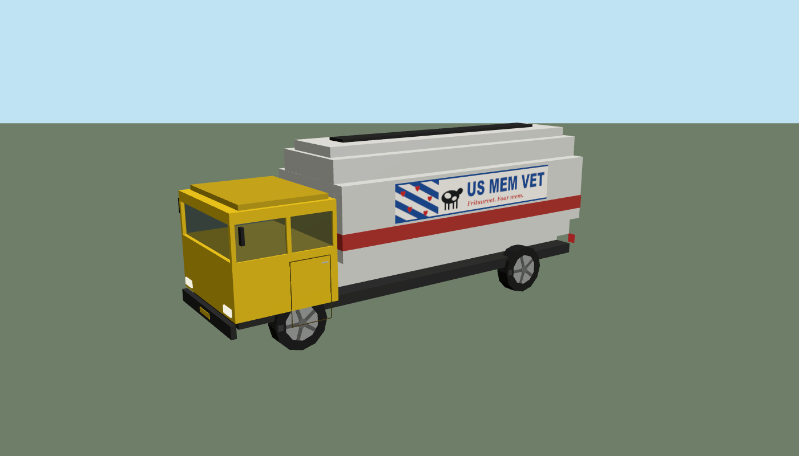
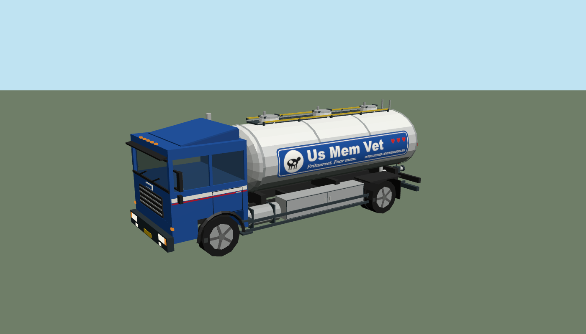
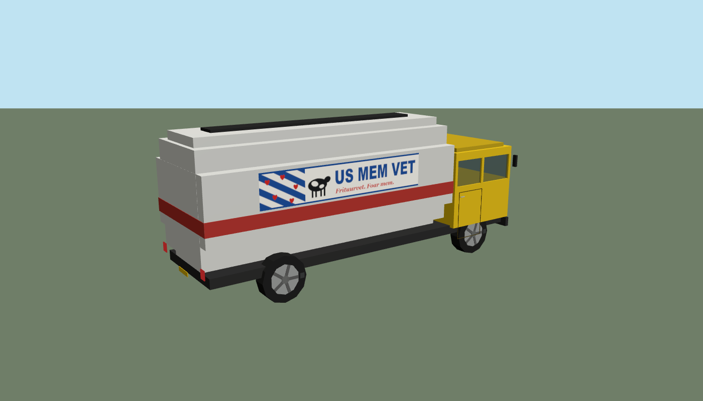
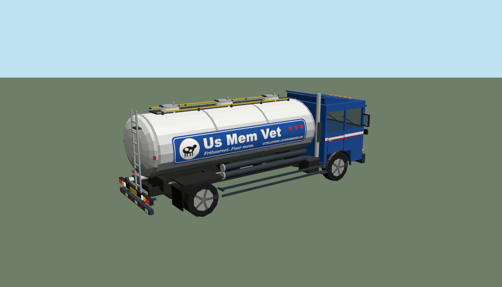
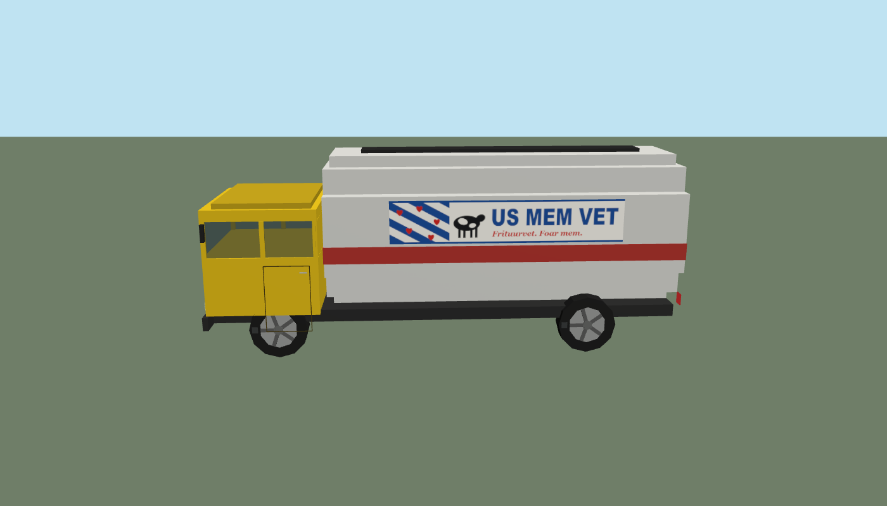
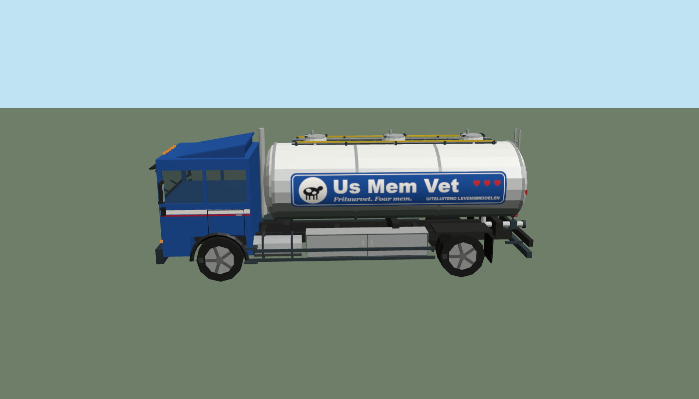
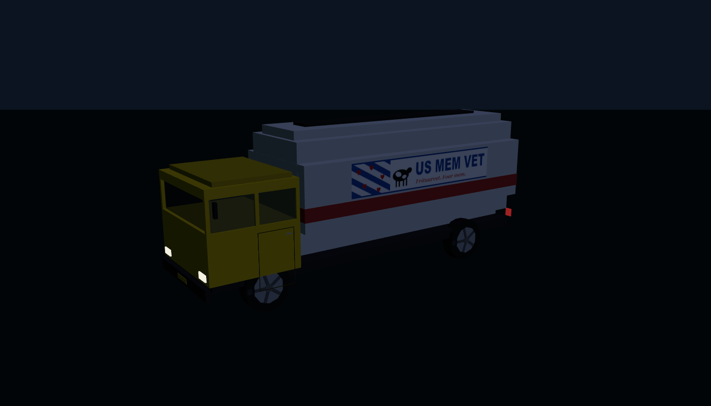
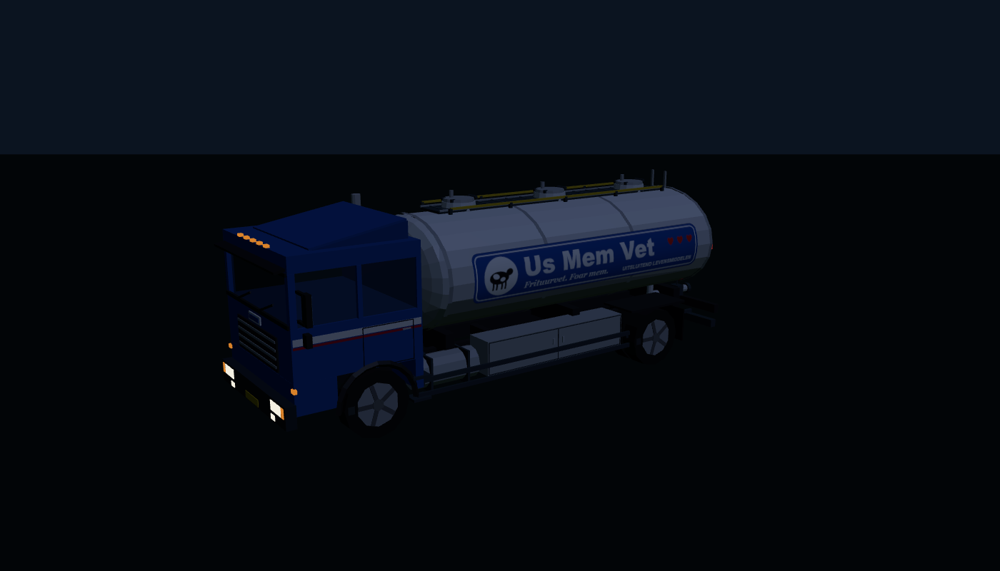
Norm in het centrale register (propregister.js VOERTUIG_REGISTER.tankwagen): 3.500 tot 8.000 driehoeken, minstens 24 kleuren, zes eisen. Gemeten: 5.350 driehoeken (romp en wielen, niveau 0), 26 kleuren. Geen coplanaire vlakken (vehicle_zfight_test).
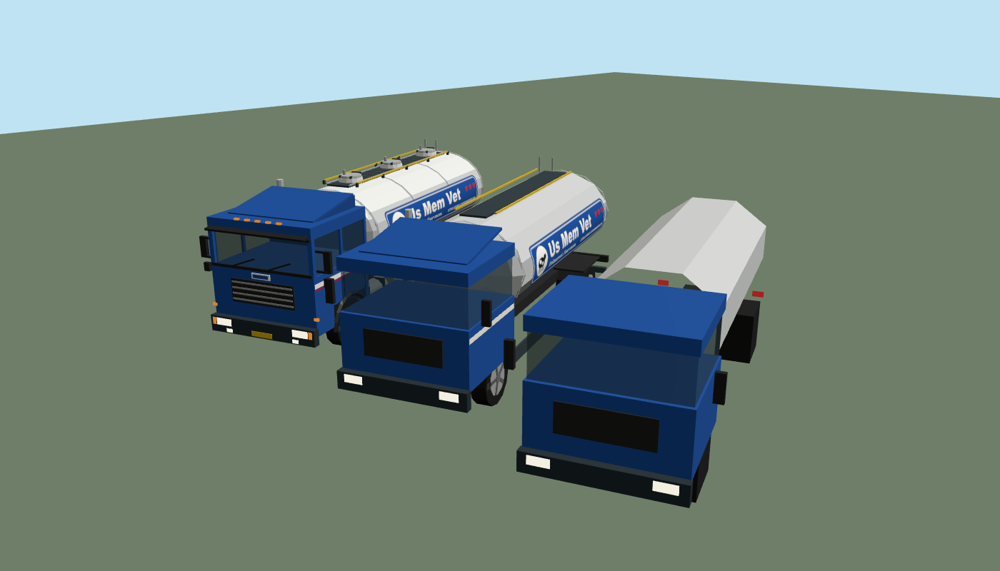
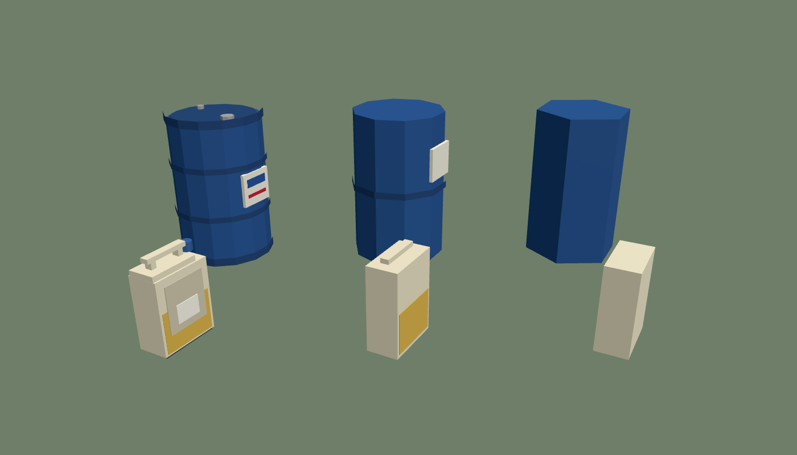
De opgave staat per model in het register (lod: { grenzen, band, weg }); de regels zijn puur in lodlevels.js, de three-kant in lod3d.js (DitherLOD, een THREE.LOD die de renderer zelf bijwerkt). Bedoeld als centrale vorm voor het LOD-systeem van perf-ultra-23-11, dat er nog niet was.
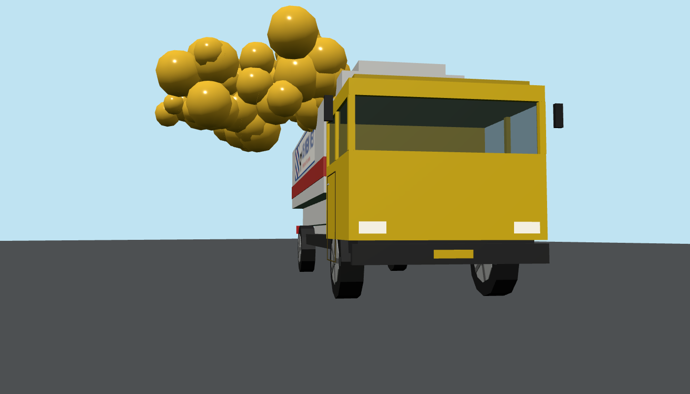
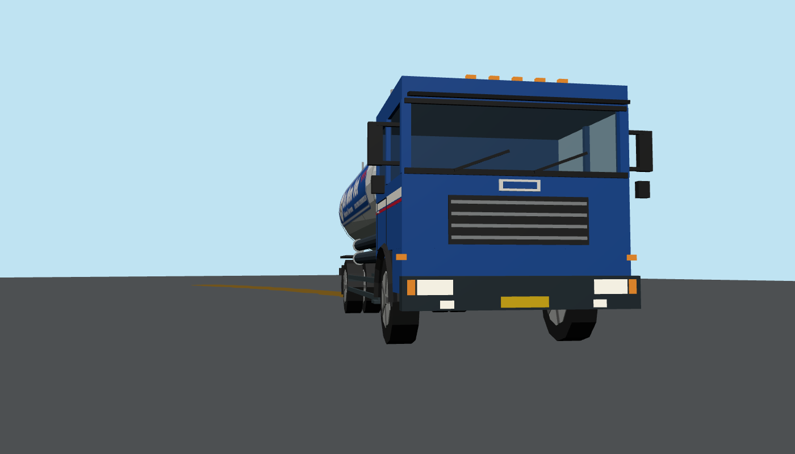
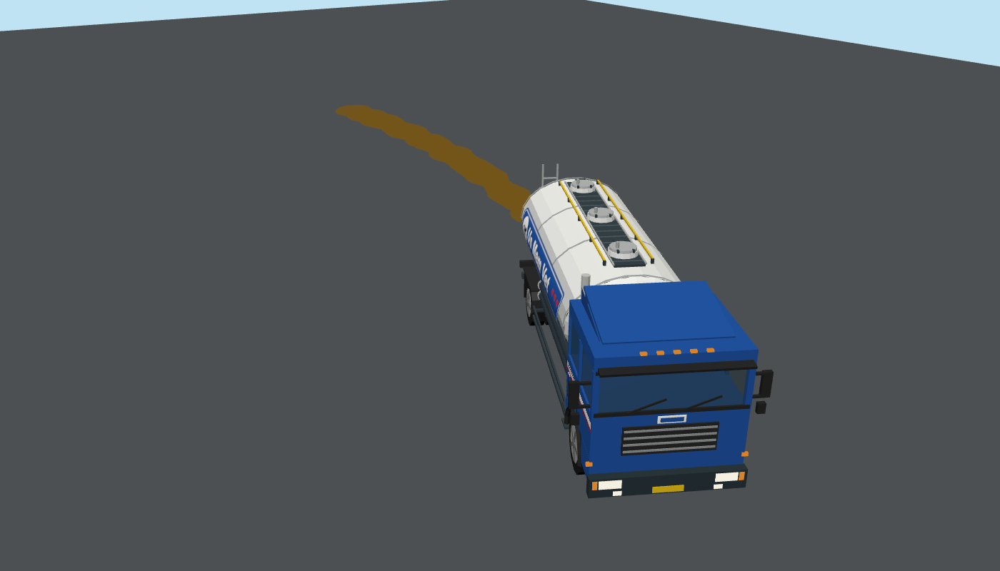
Tekst: Al het vet van Grunn. wordt Dertienduizend liter frituurvet. met de plek Europaweg eronder, in de vorm van de andere kaarten (Zomer? Ja. / Onweer boven de Kiekdeuse).
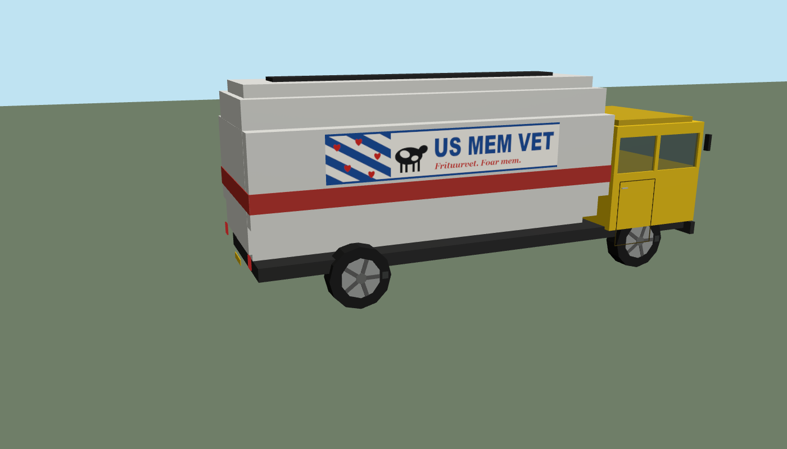
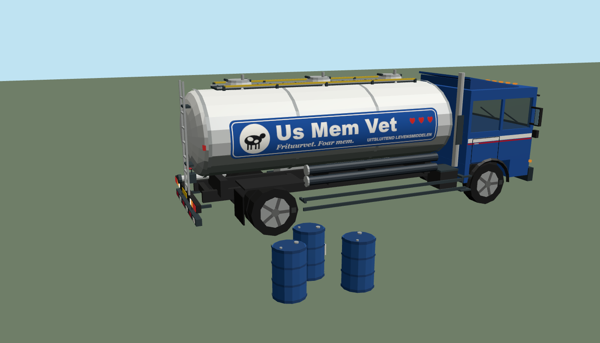
| Bakwagen (zelfde maat) | Tankwagen | |
|---|---|---|
| 0 tot 50 km/u | 7,2 s | 13,0 s |
| Remweg uit 80 km/u | 17,6 m | 39,2 m |
| Zijgrip speler | 23 m/s² | 9,7 m/s² (bocht op 72 km/u: straal 41 m) |
| Vering | 1 (auto) | 1,9 (bus 1,7), overhellen tot 0,136 rad |
| Camera | 3,20 | 3,68 (x 1,15) |
| Motor | benzine-vier | lage diesel (bestaande lus motor_diesel_stationair), voor elke vrachtwagen |
Eén plek met de factoren: game/js/vehicle/heavyload.js; pure test scripts/heavyload_test.mjs. Optrekken, remmen, grip en sturen gelden alleen voor de speler: de AI-tankwagen die in M07 vlucht, rijdt zoals eerst.